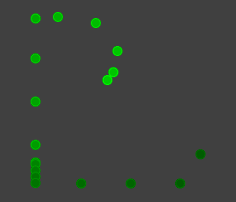

Note: Sep 2015 - This tutorial has been updated for iOS9/Swift2.
This is iOS Animations by Emails for March 2015. It features a tutorial, which will guide you through creating 3 cool animations from scratch by using CAReplicatorLayer. You may never heard of it but that’s cool - it’s an obscure but powerful CoreAnimation class.
I want to take a moment to thank everyone who kept spreading the word about iOS Animations by Emails and helped our animation community grow almost 1,000 strong during this last month. Big thanks to all who tweeted about launch of my book iOS Animations by Tutorials - you guys are the best!
I hope that when you read through this month’s tutorial you will be happy that I take my sweet time to prepare those :] Enjoy!
- Marin Todorov
Tutorial: Creating animations with CAReplicatorLayer
This tutorial is designed for Xcode 7/Swift2 or a compatible version.
CAReplicatorLayer is absolutely my favorite layer so I'm really glad to introduce you to creating animations with it.
In this tutorial I’ll guide you through creating 3 different animations using the power of the replicator layer.
You will start by reproducing the “volume bars” animation from the built-in in iOS Music app (the moving bars on the right next to the song called “Pyramid Song”):

Then you will move on to creating a custom activity indicator and for the grand finale you will create an animation to render the raywenderlich.com logo on screen in an unusual way:

By the author of iOS Animations by Tutorials.
1. Basic replicator animation
CAReplicatorLayer is a container layer - you add content to it and the replicator layer replicates that content. If you put in a single shape - the replicator layer will display several shapes on screen.
The cool thing is that you can instruct the replicator in advance how much geometry offset you want between the content copies, how the alpha or color tint should change from one copy to the other. This allows you to create pretty cool effects and animations.
For the first part of this tutorial you are going to replicate this animation from the iOS Music app:
This animation features a red bar that animates up and down and there are two copies of that animation showing with a bit of geometrical and temporal offset. Let’s start!
Create a new Xcode project and select the Single View template. Once you save the project open ViewController.swift.
Add to viewDidLoad():
animation1()
And add an empty method in the ViewController class:
func animation1() {
}
Let’s start by creating the replicator layer, insert into animation1():
let r = CAReplicatorLayer()
r.bounds = CGRect(x: 0.0, y: 0.0, width: 60.0, height: 60.0)
r.position = view.center
r.backgroundColor = UIColor.lightGrayColor().CGColor
view.layer.addSublayer(r)
You create a new instance of CAReplicatorLayer and set its bounds and position. To make sure where the layer appears you give it a light gray background color and then you add it to the view controller’s view.
Run the app now and you will see the layer show up like a silver square:

Now let’s create the first bar (the original bar so to say), add to animation1():
let bar = CALayer()
bar.bounds = CGRect(x: 0.0, y: 0.0, width: 8.0, height: 40.0)
bar.position = CGPoint(x: 10.0, y: 75.0)
bar.cornerRadius = 2.0
bar.backgroundColor = UIColor.redColor().CGColor
r.addSublayer(bar)
This code creates a red rectangle with rounded corners and positions it to the left side of the replicator layer. Run the app one more time to see your progress:

The bar appears outside the replicator layer because you will be animating it up and down. The start position for that animation is just below the replicator bounds - that's why the bar seems a bit "off".
Speaking of animating the bar add the animation code to do that:
let move = CABasicAnimation(keyPath: "position.y")
move.toValue = bar.position.y - 35.0
move.duration = 0.5
move.autoreverses = true
move.repeatCount = Float.infinity
bar.addAnimation(move, forKey: nil)
This will make the bar repeatedly move up and down, up and down... This is a great start and even if it doesn’t look that impressive right now you are in fact almost ready with your final animation!
Time for replicator power! Add this line to your code:
r.instanceCount = 3
This tells the replicator that you want 3 copies of your content on screen - including your original one. If you run the app right now you won’t see any change because all 3 copies appear at the same location and animate synchronously all at the same time. To offset each copy a bit to the right add:
r.instanceTransform = CATransform3DMakeTranslation(20.0, 0.0, 0.0)
This way you tell the replicator layer what transform to apply to each copy of the content. You set instanceTransform to offset each copy by 20 points; when you run the app you should see 3 red bars next to each other:

Ha! Your original red bar and two clones are all animating up and down, up and down... Cool! The last step to achieve the desired animation effect is to give each bar a bit of delay so they don’t move in unison. Add one last line of code:
r.instanceDelay = 0.33
instanceDelay is the temporal offset between each copy that the replicator layer renders. The animation you apply to your original bar will have 0.33 seconds delay for the 2nd bar and 0.66 for the 3rd bar respectively.
Run the app and check the result - you should see the bars jump around just like in the original animation.
To wrap up you need to do two quick changes:
- to see only the top parts of the red bars clip the content of the replicator layer; add
r.masksToBounds = true; - find the line where you set the
backgroundColorof the replicator layer and delete it. You don’t need the gray background any more.
These should give you the final animation:

If you want to play around with the animation have a go at changing instanceCount, instanceTransform and instanceDelay. Pretty cool, eh?
2. Activity indicator
Let’s move to more serious replicator animations! Scroll to viewDidLoad() and replace animation1() with:
animation2()
As you probably already guessed your next step is to add an empty method for your next animation:
func animation2() {
}
In this part of the tutorial you are going to create an activity indicator. For fun you are going to create a bit more elaborate animation than the one featured by the build-in iOS activity view.
Start by adding a replicator layer to the view controller’s view, add to animation2():
let r = CAReplicatorLayer()
r.bounds = CGRect(x: 0.0, y: 0.0, width: 200.0, height: 200.0)
r.cornerRadius = 10.0
r.backgroundColor = UIColor(white: 0.0, alpha: 0.75).CGColor
r.position = view.center
view.layer.addSublayer(r)
In exactly the same way as before you create an empty replicator layer with gray background. This time you will keep the background color to mimic a HUD activity.
Next add a simple layer that draws a white rectangle on screen:
let dot = CALayer()
dot.bounds = CGRect(x: 0.0, y: 0.0, width: 14.0, height: 14.0)
dot.position = CGPoint(x: 100.0, y: 40.0)
dot.backgroundColor = UIColor(white: 0.8, alpha: 1.0).CGColor
dot.borderColor = UIColor(white: 1.0, alpha: 1.0).CGColor
dot.borderWidth = 1.0
dot.cornerRadius = 2.0
r.addSublayer(dot)
You create a 14 x 14 rectangle and give it a 2 pt corner radius. At the end you add the dot layer to the replicator. Run the app now to see how everything looks like so far:

Now configure the replicator to render 15 dots and rotate each one by an angle equal to 2π/15 (e.g. 15 times this angle will complete a full circle):
let nrDots: Int = 15
r.instanceCount = nrDots
let angle = CGFloat(2*M_PI) / CGFloat(nrDots)
r.instanceTransform = CATransform3DMakeRotation(angle, 0.0, 0.0, 1.0)
You set instanceCount to 15 and you set a rotation transform using a 2π/15 angle.
Note: If you feel like things are getting complicated consult Chapters 8 through 11 about layer animations and Chapters 12 to 14 about specialized layers from iOS Animations by Tutorials.
Run the app again and feast your eyes upon this magnificent beauty:

You can easily experiment with the vision of your activity indicator if you just change nrDots to 10, 25, or any other value. The replicator obediently calculates the geometry and renders the dot clones:

Let's now make the dots shrink over a period of 1.5 seconds. Make a scale animation and apply it to the original dot:
let duration: CFTimeInterval = 1.5
let shrink = CABasicAnimation(keyPath: "transform.scale")
shrink.fromValue = 1.0
shrink.toValue = 0.1
shrink.duration = duration
shrink.repeatCount = Float.infinity
dot.addAnimation(shrink, forKey: nil)
This will result in a hypnotic animation making all dots animate and disappear synchronously over and over again. (Make yourself a favor and don't stare too long into this particular animation)
As you hopefully remember the trick to make the animation move is to give a bit of delay to each copy, add:
r.instanceDelay = duration/Double(nrDots)
This will get your animation rotating nicely. The very first iteration of the animation is a bit strange though - all dots are visible at first and just after the first iteration of the animation they start disappearing as desired.
To fix this you will scale down the original dot before all the animations start kicking in, add this last line of code to animation2():
dot.transform = CATransform3DMakeScale(0.01, 0.01, 0.01)
This will result in a slick and polished animation:

Wow, that animation was easier to create than expected wasn't it? If you experiment a bit with the basic activity indicator code above you can create all kinds of effects easily, give that a try!
3. Follow the leader
The final and most amusing animation of the three featured in this tutorial is called Follow the leader. For this animation you will animate your original layer over a path and let its clones run after it and try to catch it.
Scroll to viewDidLoad() and replace animation2() with:
animation3()
As you probably already guessed your next step is to add an empty method for your final animation:
func animation3() {
}
For this animation you will need one more method. Using the PaintCode app I quickly created a bezier path, which you will use for your animation. Add this method to ViewController:
func rw() -> CGPath {
//// Bezier Drawing
let bezierPath = UIBezierPath()
bezierPath.moveToPoint(CGPointMake(31.5, 71.5))
bezierPath.addLineToPoint(CGPointMake(31.5, 23.5))
bezierPath.addCurveToPoint(CGPointMake(58.5, 38.5),
controlPoint1: CGPointMake(31.5, 23.5),
controlPoint2: CGPointMake(62.46, 18.69))
bezierPath.addCurveToPoint(CGPointMake(53.5, 45.5),
controlPoint1: CGPointMake(57.5, 43.5),
controlPoint2: CGPointMake(53.5, 45.5))
bezierPath.addLineToPoint(CGPointMake(43.5, 48.5))
bezierPath.addLineToPoint(CGPointMake(53.5, 66.5))
bezierPath.addLineToPoint(CGPointMake(62.5, 51.5))
bezierPath.addLineToPoint(CGPointMake(70.5, 66.5))
bezierPath.addLineToPoint(CGPointMake(86.5, 23.5))
bezierPath.addLineToPoint(CGPointMake(86.5, 78.5))
bezierPath.addLineToPoint(CGPointMake(31.5, 78.5))
bezierPath.addLineToPoint(CGPointMake(31.5, 71.5))
bezierPath.closePath()
var t = CGAffineTransformMakeScale(3.0, 3.0)
return CGPathCreateCopyByTransformingPath(bezierPath.CGPath, &t)!
}
This method creates a bezier path in code and returns a CGPath copy of it - this CGPath you will use to create a keyframe animation.
Scroll to animation3() and add inside:
let r = CAReplicatorLayer()
r.bounds = view.bounds
r.backgroundColor = UIColor(white: 0.0, alpha: 0.75).CGColor
r.position = view.center
view.layer.addSublayer(r)
This time you create an empty replicator layer as big as the view controller's view and add it on screen. Just as before first you need to add an original layer for the replicator to work with - add:
let dot = CALayer()
dot.bounds = CGRect(x: 0.0, y: 0.0, width: 10.0, height: 10.0)
dot.backgroundColor = UIColor(white: 0.8, alpha: 1.0).CGColor
dot.borderColor = UIColor(white: 1.0, alpha: 1.0).CGColor
dot.borderWidth = 1.0
dot.cornerRadius = 5.0
dot.shouldRasterize = true
dot.rasterizationScale = UIScreen.mainScreen().scale
r.addSublayer(dot)
You create a small silver rectangle and give it corner radius of half the rectangle width so you end up with a small circle. You add the circle to the replicator. If you run the app right now you will see the circle show up in the top left corner of the screen.
Let's animate the circle over a path:
let move = CAKeyframeAnimation(keyPath: "position")
move.path = rw()
move.repeatCount = Float.infinity
move.duration = 4.0
dot.addAnimation(move, forKey: nil)
This animation animates the circle over the path returned by the rw() method. The movement takes 4 seconds and repeats indefinitely.
Note: If you want to learn more about how layer keyframe animations work with paths read Chapter 15, Stroke and Path Animations from iOS Animations by Tutorials 2nd Ed..
If you run the app right now you will see the circle run around like crazy but you probably won't recognize the path it follows.
Let's make things more obvious by putting the replicator layer to work, add this code:
r.instanceCount = 20
r.instanceDelay = 0.1
This will add 19 more copies of the circle and let them run after the original one:

Cool! The animation starts looking much like your favorite raywenderlich.com logo.
Let's make the circles green to mimic the colors of the raywenderlich.com website. Add this code to add tinting to the replicator content:
r.instanceColor = UIColor(red: 0.0, green: 1.0, blue: 0.0, alpha: 1.0).CGColor
Setting instanceColor multiplies the original content color by the color you provide. In this case you set the multiply color to bright green so if you run the app you will see one very green animation :)))
The interesting part is that you can also vary the instanceColor from copy to copy. It's real easy to say that you want the green tint to become darker and darker with each circle. Add this last line of code:
r.instanceGreenOffset = -0.03
This will make the replicator decrease by 0.03 the green component of the color tint of each next circle. The final animation looks like this:

Do I hear anyone cracking open a new Xcode project and starting on a Snake game clone? :]
This is the final animation for this month's tutorial! There's even more to CAReplicatorLayer so if you are curious to experiment consult the Apple docs. One topic we didn't touch at all in this tutorial is animating the properties of the CAReplicatorLayer class itself (instead of animating the content layers) - that's a whole new topic!
If you create some nice animations with CAReplicatorLayer don't forget to ping me on twitter @icanzilb and show me. That's all for this tutorial, but don't forget to check out the animation links at the bottom!